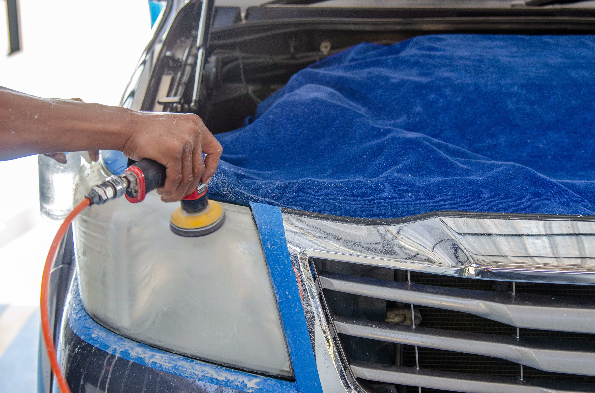

How to Restore Cloudy Headlights
Cloudy or yellow headlights are usually caused by UV damage and oxidation of the outer plastic lens. In many cases, you can restore them at home by cleaning the lenses, wet-sanding the damaged surface, polishing the plastic, and applying a UV-resistant protective coating.

Why Do Headlights Become Cloudy?
Most modern headlights use polycarbonate plastic lenses instead of glass. The plastic is normally covered with a protective UV-resistant coating, but years of sunlight, weather, road debris, car washes, and temperature changes can gradually damage that surface.
Once the protective layer deteriorates, the plastic underneath can oxidize and become yellow, hazy, or cloudy. This reduces the amount of light that passes through the lens and can make headlights appear much dimmer at night.
Common Signs of Headlight Oxidation
- Yellow or brown discoloration on the lens.
- A white or hazy appearance when looking at the headlight.
- Fine scratches or surface imperfections.
- Reduced nighttime visibility despite working bulbs.
- The headlight looks cloudy mainly on the outside surface.
What You Need to Restore Cloudy Headlights
A basic restoration can be done with relatively inexpensive supplies. The exact materials depend on how badly the lens is oxidized, but the following items are commonly useful:
- Car wash soap and clean water.
- Microfiber towels.
- Painter's masking tape.
- Fine-grit wet/dry sandpaper.
- A spray bottle filled with water.
- Plastic polish or headlight polishing compound.
- A clean microfiber cloth or polishing pad.
- UV-resistant headlight coating or sealant.
If the headlights are only slightly hazy, polishing may be enough. Heavily oxidized lenses generally need sanding first to remove the damaged surface layer.
How to Restore Cloudy Headlights Step-by-Step
1. Wash the Headlight Thoroughly
Start by washing the headlight and the surrounding bodywork with car wash soap and water. Remove dirt, road film, bugs, and other contamination from the surface.
Dry the area completely with a clean microfiber towel. Working on a clean surface helps prevent dirt from creating additional scratches during sanding and polishing.
2. Protect the Paint Around the Headlight
Apply painter's tape around the edges of the headlight. Cover the nearby painted panels carefully, especially if you plan to use sandpaper or a polishing compound.
The tape creates a small barrier that helps reduce the chance of accidentally sanding or polishing the vehicle's paint.
3. Wet-Sand the Oxidized Surface
For heavily cloudy headlights, lightly wet the lens and use fine-grit wet/dry sandpaper. Keep both the lens and sandpaper wet while working. Use even strokes and avoid concentrating on one small area for too long.
Depending on the condition of the lens, you may gradually move through several finer grits. The goal is to remove the damaged outer layer and leave the surface evenly dull before polishing.
Do not rush this step. Uneven sanding can leave visible scratches that are difficult to remove later.
4. Rinse and Inspect the Lens
Rinse the headlight and wipe it clean. Inspect the surface under good lighting. If you can still see patches of yellow oxidation or deeper scratches, additional sanding may be necessary before polishing.
5. Polish the Headlight
Apply a plastic polish or headlight polishing compound to the lens. Work the product into the surface using a microfiber cloth or suitable polishing pad according to the product instructions.
Continue polishing until the cloudy appearance is replaced by a much clearer, smoother surface. If you are polishing by hand, several passes may be needed.
6. Clean and Dry the Headlight
Remove any remaining polishing residue with a clean microfiber towel. Make sure the lens is completely clean and dry before applying any protective coating.
7. Apply UV Protection
This step is important because polishing removes some or all of the damaged protective surface. Apply a UV-resistant headlight coating, sealant, or restoration product according to its instructions.
Allow the coating to cure for the recommended amount of time before washing the vehicle or exposing the headlight to heavy moisture. A proper UV-protective layer can help slow down future oxidation.
Tips for Better Headlight Restoration Results
- Keep the surface wet while sanding: Water helps carry away sanding residue and reduces the chance of excessive heat or uneven abrasion.
- Use even pressure: Aggressive sanding in one small area can create an uneven surface.
- Protect the surrounding paint: Always mask the body panels around the headlight before sanding.
- Do not skip UV protection: A restored lens can become cloudy again much faster without suitable protection.
- Work in good lighting: It is easier to see remaining oxidation and scratches before moving to the polishing stage.
When Should You Replace the Headlight Instead?
Headlight restoration works best when the damage is mainly on the outside of the plastic lens. If the lens is cracked, badly damaged, deeply scratched, or has moisture collecting inside the housing, polishing the outside may not solve the underlying problem.
Internal damage, broken mounting points, severe cracking, or a damaged headlight housing may require replacement instead of surface restoration.
If the lens becomes cloudy again very quickly after restoration, the protective coating may have failed or there may be deeper damage that a basic restoration cannot correct.
Frequently Asked Questions
Yes. If the cloudiness is caused by oxidation on the outside of the plastic lens, cleaning, wet-sanding, polishing, and applying UV protection can often improve the appearance significantly.
UV exposure gradually damages the protective coating on plastic headlight lenses. The exposed plastic can then oxidize and develop a yellow or cloudy appearance.
Toothpaste can provide a temporary improvement because it contains mild abrasives, but it is generally less predictable than a dedicated headlight restoration product. It also does not provide the UV protection needed to slow future oxidation.
The result depends on the condition of the lens, the restoration method, weather exposure, and the protective coating used. A properly protected lens generally lasts longer than one that is only polished without UV protection.
Polishing can remove oxidation but may also remove the damaged protective surface layer. Without a suitable UV-resistant coating afterward, the plastic can oxidize again relatively quickly.